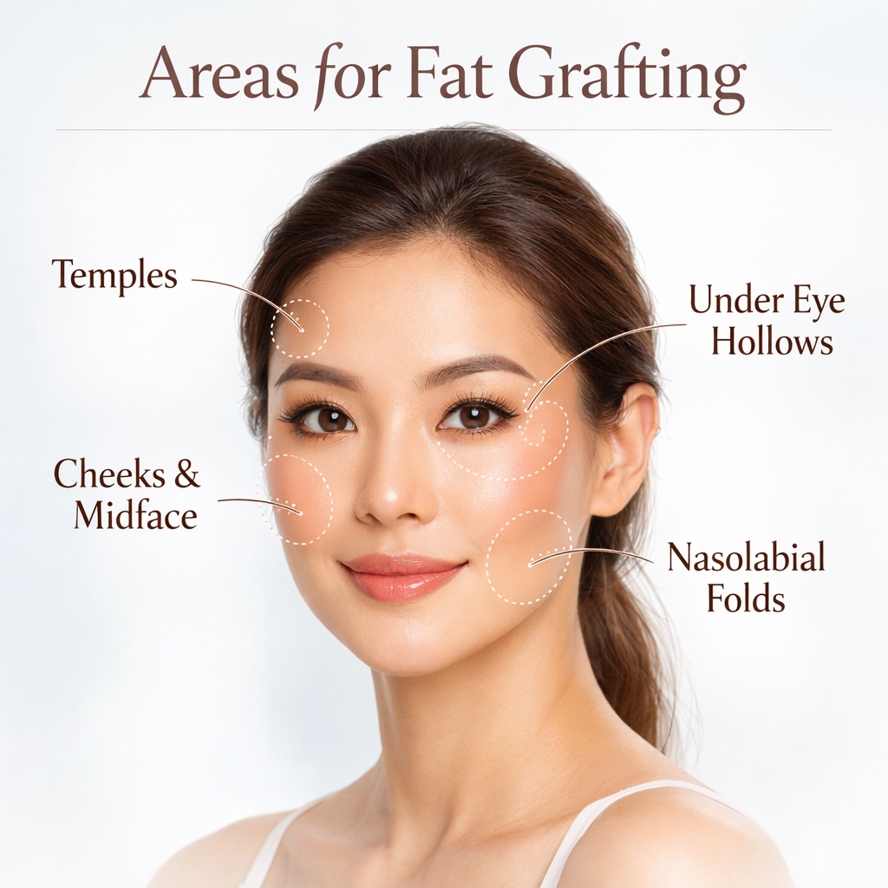

Natural facial rejuvenation using your own tissue to restore volume, improve skin quality, and enhance facial harmony.
Facial fat grafting is a technique that uses your own fat to restore volume loss, soften facial contours, and rejuvenate the skin. It offers a natural and long-lasting alternative to synthetic fillers.
Dr Chooi Lai Kuan focuses on achieving subtle, natural enhancement rather than overcorrection. Each procedure is carefully planned to maintain facial balance while restoring youthful contours.
With a background in reconstructive surgery, she applies precise techniques in fat harvesting, purification, and placement to maximise graft survival and achieve refined results.
Facial fat grafting restores volume in key areas to enhance natural contours and achieve balanced rejuvenation.

Restores volume to hollow temples, improving upper facial balance.
Softens hollowness and reduces dark shadows for a refreshed look.
Enhances cheek contour and restores youthful fullness.
Softens deep lines around the mouth.
Uses your own tissue for a soft, natural appearance.
Results can be more durable compared to fillers.
Enhances skin quality and texture over time.
A personalised consultation will help determine whether facial fat grafting is suitable for your concerns and desired outcome.